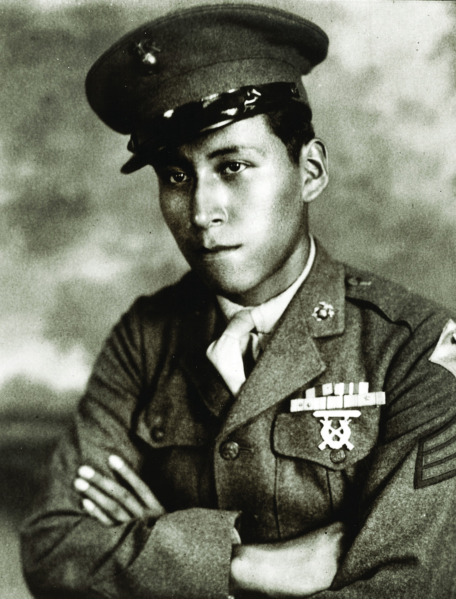

"Get me all the ammo you can, and put it next to me. Get everybody you can out of here." Those were his last orders. Every man behind him lived.

Mitchell Red Cloud Jr. was born on the Ho-Chunk Nation in Hatfield, Wisconsin on July 2, 1925 — the son of a family with roots as deep as the American soil they lived on. The Ho-Chunk had produced warriors across generations, long before America thought to fully honor them for it. Mitchell would carry that tradition to its farthest edge.
He was sixteen years old when he enlisted in the United States Marine Corps, lying about his age to get in. He came home from Guadalcanal and Okinawa a combat veteran at nineteen. After the Pacific war he was discharged, technically at peace. But the stillness of civilian life didn’t hold. In 1948 he re-enlisted — this time with the U.S. Army — and when the Korean War broke out in June 1950, Corporal Mitchell Red Cloud Jr. was sent back into the fire.
It was before dawn on a ridgeline near Chonghyon, North Korea. Autumn had turned bitter. Red Cloud’s company had dug in, but the Chinese Communist Forces — who had entered the war just days before, flooding across the Yalu River in waves — had found them in the dark. Less than a hundred feet away, through brush and cold air, a large enemy force was moving fast and close.
Mitchell Red Cloud was the first man in his company to hear them. He was the first to his feet. He opened up with his automatic rifle at point-blank range, pouring fire into the advancing column. The assault checked. His company had seconds — enough to pull back, consolidate, and get the wounded moving. Those seconds came from one man choosing to stand instead of run.
He was hit. Severely wounded. The men around him tried to help him back. He refused.
“Refusing assistance, he pulled himself to his feet and, while providing fire support, ordered the withdrawal of the remainder of his squad. Wrapping his arm around a tree for support, he continued to deliver devastating fire into the enemy until he was fatally wounded.”
He wrapped his arm around a tree. He kept firing. His men got out. Mitchell Red Cloud Jr. was twenty-five years old.
Two days after his death, Easy Company retook the hill. When they found the fallen American soldiers, the Chinese had gone through them all — rifles taken, gear stripped. All of them except one.
The body of Mitchell Red Cloud Jr. had not been touched.
His fellow soldiers believed it was the enemy’s way of honoring him. The man who had stopped them in the dark, alone, with nothing but nerve and a tree to hold himself upright.
A person never dies until he’s forgotten. And that’s what’s really important to me — that he’s not forgotten.
— Annita Red Cloud, daughter of Cpl. Mitchell Red Cloud Jr.The medic from his unit — likely the last person to speak with him — later recounted Red Cloud’s final orders: “Get me all the ammo you can, and put it next to me. Get everybody you can out of here.” He knew what he was doing. He chose it anyway.
In April 1951, General Omar Bradley — Chairman of the Joint Chiefs of Staff, one of the great commanders of the Second World War — traveled to the Pentagon to present the Medal of Honor to Mitchell’s mother, Lillian “Nellie” Red Cloud. The award was posthumous. It said Mitchell had shown “dauntless courage and gallant self-sacrifice.” Those words, in the language of official citation, barely hold what the moment actually was.
In 1955, Mitchell’s body was brought home to Wisconsin and interred at the Decorah Cemetery at Winnebago Mission — what his daughter Annita calls “the hub of the Ho-Chunk Nation.” In 1957, the U.S. Army named its installation in Uijeongbu, South Korea — on the very peninsula where he made his stand — Camp Red Cloud. In 1999, the United States Navy commissioned the USNS Red Cloud, a military sealift command vessel bearing his name on every ocean it crosses.
Korea is called the Forgotten War. Mitchell Red Cloud Jr. is not a forgotten man. A base. A ship. A grave in Wisconsin. A daughter who still tells the story.
What Mitchell Red Cloud brought to two wars was more than a rifle. He came from a people with an unbroken tradition of service to a country that had taken their land and made slow, halting work of honoring their sacrifice. The Ho-Chunk had produced warriors across generations. Mitchell was twenty-five when he died — a veteran of Guadalcanal, Okinawa, and a frozen ridgeline in North Korea that most Americans would never find on a map.
He is one of 29 Native Americans who have received the Medal of Honor. He is one of 146 awarded for the Korean War. He is one of an uncountable number of men who decided, in the last seconds before an enemy wave hit their position, that their job was to give the men behind them a chance to live.
The son of a Winnebago chief and warriors.
— Monument inscription, Decorah Cemetery, Winnebago Mission, WisconsinThe Best of America™ archive records his name here because an archive that tells the story of this nation must include the people who shaped it from the beginning — and the men who gave the last full measure to defend it. Mitchell Red Cloud Jr. is both.
“Wrapping his arm around a tree for support, he continued to deliver devastating fire into the enemy until he was fatally wounded.”
This profile has no sponsor yet — heroes like Cpl. Red Cloud deserve to be remembered forever. Become a Founding Local Patriot Business™ →